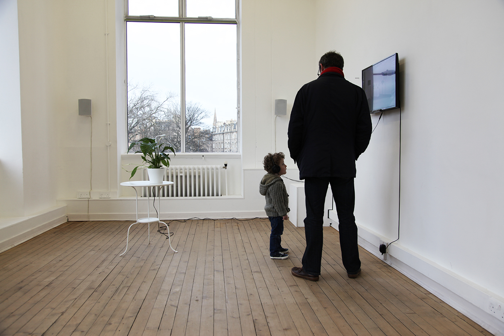
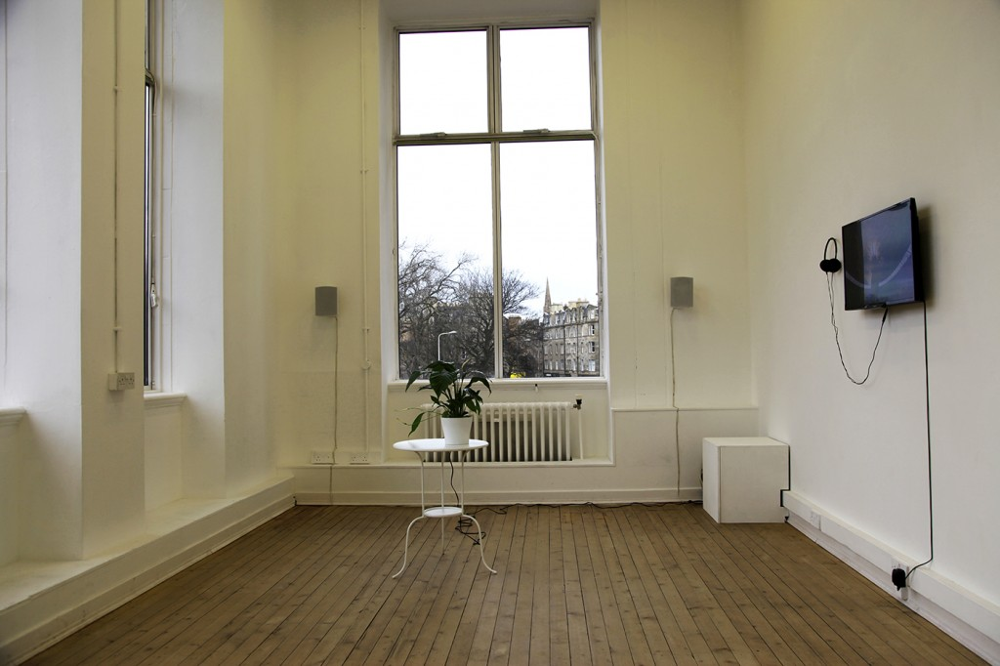

Bio-Symphony: Oliver Jennings and Sarah Jones, curated by Ben Burtenshaw
In 2014 Oliver Jennings researched the life cycles of plants at Devodama, a plant research institute in Italy. Whilst there Jennings developed a sound work that using Devodama's technology analyses the electrical impedance of a plant, and applies correlating audio to its fluctuations.
For the Edinburgh Science Festival, the artists were interested in the terms that art and science meet. For example how poetry can move beyond the illustration of scientific data, and in turn how scientific data can find an affective resonance through poetry.
Jones' poem New things was written in response to Jenning's first work, specifically the moment when one encounters the familiar rhythm of nature, mediated by technology. For this project though, Devodama's technology has been applied to continuously reconfigure the stanzas of Sarah Jones' poem.
Jennings' video work also titled Bio-Symphony, explains the association of the plant and technology with his artistic practice. As well as the specific stories and beliefs of Devodama, the inventors of the technology. Their private eco-village in Italy has a very spiritual understanding of why the plant can make sounds, which Jennings had to understand in order to research this science.
Opening: 3rd April 2015, as part of 'How the lights get in' @ Summerhall, duringEdinburgh science festival.
Oliver Jenning's uses video and sound to reveal the inner workings of natural structures. It\'s this inquisitive philosophy which led to his work Every Object Has A Spirit [2012], which was concerned with exploring and finding ways of generating patterns from life-cycles in nature. Oliver's work wishes to explore past art's capacity to illustrate science, and engage directly with the emotive and psychological ramifications of what these patterns mean. Ultimately his works aims to use technology to explore and understand nature.
Sarah Jones (1982) is an artist, writer and curator. Through first person narrative, both written and performed, Sarah is interested in exploring the micro-perceptual within the event, and the production of these spaces, between the landscape and the body in movement. Sarah was awarded her Masters of Fine Art, by the Dutch Art Institute (NL) in June 2014, after completing her Bachelor of Fine Arts at the University of Tasmania (AUS) in 2007. She recently participated in the NOA Language School at SMBA, Amsterdam (NL); and the TAAK - Marfa Summer School Residency Program Texas (US). Her most recent exhibitions include: Felt & Fa(c)t, Ormston House Gallery, (IRE) 2014; The rise and fall of the continuous cycle, DeServiceGarage, Amsterdam (NL) 2013; Come to Life at the Queen Victoria Museum and Art Gallery, Launceston (AUS) 2012; You’ll Always Be My # 1 at INFLIGHT ARI, Hobart (AUS) 2012.
